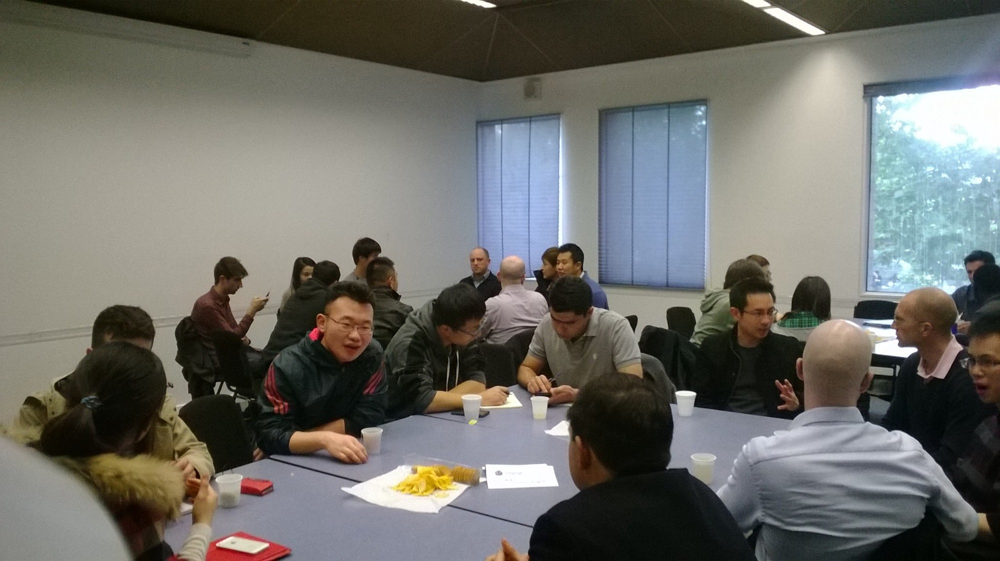
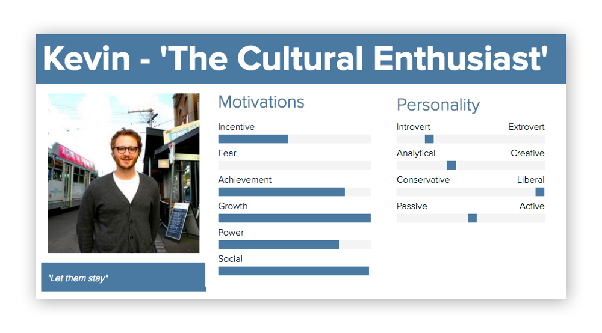
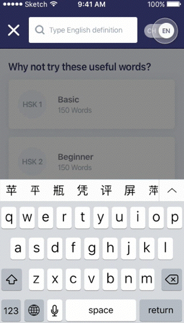
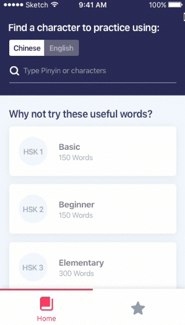
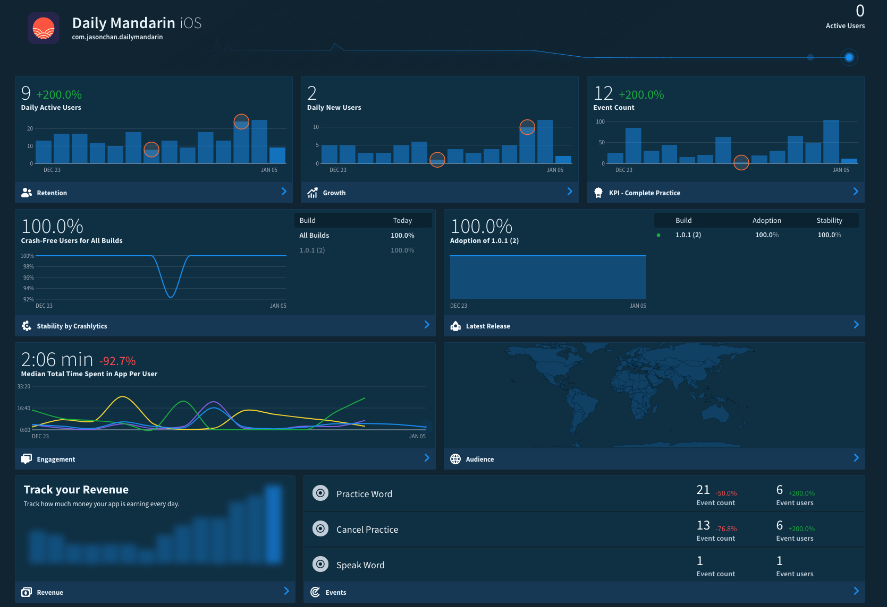

Daily Mandarin
An app for practicing Chinese character writing
iOS, Android
UI design, UX design, interaction design, branding, marketing
2017
Background
In early 2017, I wanted a pet project where I could fully exercise a Human Centred Design approach. Often when you work for any company, there are many obstacles preventing you from applying your desired way of working. There’s many implications to telling everyone the way they’re doing things is wrong (especially if they’ve had great success already) and why they should practice (insert tech buzz trend here) because blog X says so. Human Centred Design (or User Centred Design) is basically an approach which emphasises user validation through a highly iterative process, basing design decisions off user research and a quick feedback loop as opposed to biased personal assumptions. Go to any design meetup and you’ll inevitably encounter designers moaning about how no one in their company ‘gets it’. I myself have probably been guilty of this. So it was time to quit moaning and find out for myself if it was worth doing or not. Why champion a design philosophy I have no idea about whether it actually works or not? Thanks to my open minded iOS dev partner Jason Chan, who fully embraced this philosophy, we were able to see what kind of product would be born out of this process.
Why?
Both Jason and I are Malaysian born with Chinese heritage. We felt compelled to improve in the language our family and ancestors used and to give back. So our mission was to help others learn Mandarin. But, learning a language is so broad as there are so many facets to a language, so many different types of learners all with different reasons and styles. Queue UX research. To find out a bit more about Mandarin learners I went to Language Connection, a local language exchange group in Melbourne and interviewed some people. I also distributed a Google Survey on Facebook. We basically found that pronunciation and character memorisation were common pain points amongst learners. You can read more about the research here.
Who?
After interviewing a bunch of people and collecting survey data, we were able to form a group of rough personas to encapsulate the type of people that were likely to learn Mandarin and their motivations. In a nutshell there were people who were motivated by: romance, financial gain, cultural interest and personal identity.
How?
So after that we decided to tackle character memorisation as our main problem. In Mandarin, there is no alphabet or system. One needs to memorise 1000s of little pictures in order to write proficiently. Traditionally kids are taught to repetitively write characters over and over again on paper until it’s in their muscle memory. So my hypothesis was that needing to physically have a pen and piece of paper in a convenient place and time was a barrier towards learning characters. Wouldn’t you be far more likely to learn the characters if you could do it anywhere anytime with any word on your phone? There were a bazillion features which we came up with. Here’s an example of the wishlist I had prior to production. But after much thought and discussion, we went for just the MVP and selected the key features which would validate whether this product was what the world needed or not.
What?
It wasn’t long before we had a workable prototype. An app which basically allowed one to search any word and practice repetitively with the aid of an animated demo. All the dictionary data and stroke animations were open source and free for all to use. We went through probably 4–5 small iterations of this concept, testing back and forth with new users found at the local language exchange meet up. It was a bit of a challenge getting a fresh pair of eyes on it for every iteration!
UI
This was the fun and easy part. There were a few animation transitions that were important to communicate visually, such as the way our Search worked. Many people were confused by the way it worked in our prototype, so in the final UI I went for a more literal approach in it’s presentation. These quick UI animations can easily be made in Principle.
 Pre-launch
Prior to launch, Jason had hooked up the app with Fabric. Fabric basically allows you to monitor any and every action you want. We had a deep conversation about what metrics we wanted to use as a gauge for our success. And to be honest, we didn’t have all the answers now. It was sort of like, casting a big net out and seeing what the sea would bring back to us. But on a broad level, we’re looking out for things like, average session time, daily active users and feature taps (i.e Are they pressing the pronunciation button? Are they quitting after just 1 word? Are they favouriting words?).
Launch & beyond
The app was launched on Nov 28th 2017. It’s still kind of early to form any kind of opinion as there has only been about 250 downloads. The app is free and even though we’ve spent a few bucks on Facebook to market it recently, getting downloads has been a tough slog. During the first 7 months of this project, we actually set up a Facebook page dedicated to showing a ‘word of the day’. We were able to get 6000+ fans without spending a dime, which proved there’s definitely a hungry audience out there who want to learn vocabulary specifically. The intention was to start promoting the app to a targeted audience once it was released. So far downloads coming from the Facebook page has not been as high as expected, given the 6000+ fans. The marketing side is probably worthy of it’s own blog post..
Reflection
In retrospect, if I were to evaluate the Human Centred Design approach in relation to this project and it’s effectiveness, I would say that never underestimate the importance of user testing. What may seem painfully obvious to you as to how a certain feature should work, will be and often is, completely different to how someone else might expect. Little usability issues such as how to search, how to drill down into a selection, could determine whether someone continues with the app, or just drops it out of frustration (which actually did happen in my face quite a few times!). In terms of user research, sometimes it’s pretty damn difficult to predict whether what you’re building will be of value to people or not. They’re just so many factors, like the quality of interview questions you ask, how honest your responses are, the quantity of responses etc. That is why it is important to get feedback and validation of your product as quick as possible and not get lost in scope creep. In that regards I think we have succeeded so far, as neither of us have spent all that much time (maybe 1–2 hours a week each over 10months?) or money (probably less than $100 combined).
Download CV
Last updated 03 Aug 2020